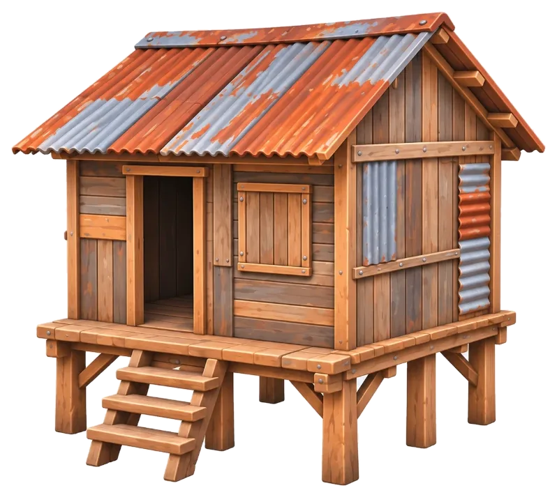
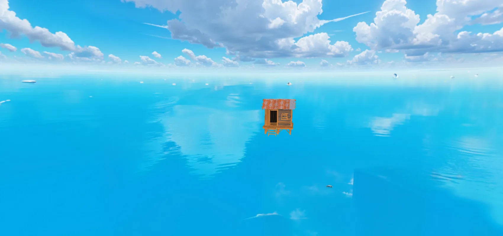
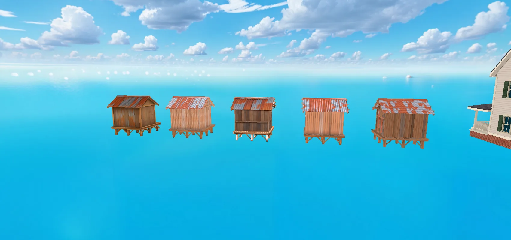

We Are Destroyers · лаборатория · 2026-11-12
Одна и та же процедурная модель из Houdini (4 × 4 м, 41 кусок для разрушения), пять способов затекстурировать её по одному референсу. Модели ниже — ровно то, что лежит в игре: скин LOD0/1/2 с текстурами, без освещения сцены (unlit), как его рисует город. Крутите, сравнивайте с референсом справа.

| # | Способ | Цена | Похоже на реф | Вблизи | Параметры домика | LOD0 / LOD1 / LOD2 |
|---|


Ближе всего к рефу спереди — 3 (проекция): это и есть пиксели рефа. Но вблизи мыло, а сзади повторы — как игровая текстура не годится.
Самый цельный «нарисованный» вид — 5 (Phantasm). Минусы: одно медовое дерево без серых досок, светлый интерьер, потерянные заплатки, сломанный прореженный LOD2, и при любом изменении размеров надо красить заново.
Лучший параметрический — 4 (образцы GPT): крыша и брус похожи, текстура переживает изменения модели в Houdini, LOD-ы авторские. Стены пока бледнее рефа — это доработка цвета, не метода.
Открытый вопрос к команде: что важнее для города — сходство с рефом (5) или параметричность (4, 2)?